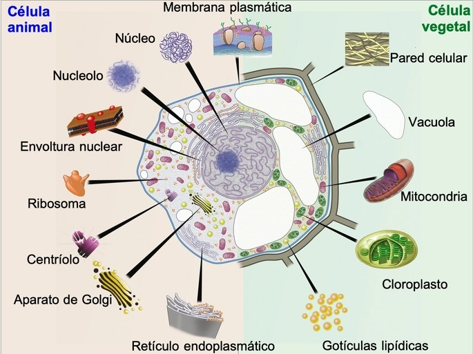

La célula es la unidad fundamental de los seres vivos que contiene todo el material necesario para mantener los procesos vitales como crecimiento, nutrición y reproducción. Se encuentra en variedad de formas, tamaños y funciones. Dentro de las células se encuentran los componentes necesarios para que ella lleve a cabo sus funciones: agua, minerales, lípidos, proteínas, azúcares y ácidos nucleicos.
Existen organismos unicelulares como las bacterias y los protozoarios, constituidos por una célula. Por otro lado, los animales y las plantas están formados por muchas y muy variadas células, por lo que se conocen como organismos multicelulares o pluricelulares. En este caso, las células se juntan para formar tejidos que tienen funciones específicas. Los seres humanos poseemos casi 40 billones de células. Las células del cuerpo humano van cambiando con el tiempo, solo las células nerviosas se mantienen desde que nacemos.
En las células en general se pueden distinguir las siguientes estructuras: La membrana plasmática: es una estructura flexible que encierra el contenido de la célula. Actúa como una barrera, que deja pasar nutrientes, agua y oxígeno, y deja salir dióxido de carbono y otras sustancias que la célula tiene que eliminar. El núcleo celular: es una estructura dentro de la célula, formado por una membrana o envoltura nuclear, que contiene el material genético de las células eucariotas. Es el centro que controla las actividades de las células eucarióticas. En las células procariotas no existe núcleo, por lo que el material genético está disperso. El citoplasma: es el interior de la célula entre el núcleo y la membrana plasmática. Aquí se encuentra la maquinaria de producción y mantenimiento de la célula. Está constituido por un material gelatinoso llamado hialoplasma. Los organelos: son los responsables por diversas actividades celulares, tales como almacenamiento, digestión, respiración celular, síntesis de material y excreción, es decir, son los responsables del mantenimiento de la vida celular. Entre los organelos podemos destacar: mitocondrias, ribosomas, retículo endoplasmático, aparato de Golgi, lisosomas y vesículas.
principal clasificación de las células las divide en células procariotas y eucariotas:

Caracteristicas comparativas |
Procariota |
Eucariota |
|---|---|---|
Estructura |
Simple, sin nucleo celular diferenciado, es decir su ADN esta disperso en el citoplasma | Mas compleja, tienen su material hereditario fundamental encerrado en una envolutra nuclear |
Numero de celulas |
Son unicelulares, es decir poseen una sola celula | son en su mayria pluricelulares, es decir poseen mas de una celula |
Origen |
Data de hace 3 500 millones de años. Creyendose que fueron las primeras celulas vivas. | Hace 1 500 millones de años. Se origino de los cambios que realizo la celula procariota. |
Caracteristicas secundarias |
|
|
Las celulas eucariotas a su vez se pueden clasificar como:
La célula animal: posee membrana plasmática, núcleo, citoplasma y organelos como la mitocondria, los ribosomas y los lisosomas.
La célula vegetal: además de poseer la membrana plasmática, el núcleo y el citoplasma, la célula vegetal tiene una pared exterior de celulosa, una vacuola central que ocupa gran espacio de la célula y los cloroplastos. En los cloroplastos se encuentra la clorofila que absorbe la luz en el proceso de fotosíntesis.